Ikaruga, Nara: things to do, food and stays
Ikaruga · Nara
Ikaruga
Highlighted on the Nara map.

Stay
門前宿 和空法隆寺
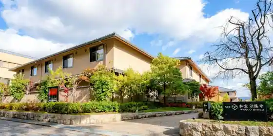
Monzen Yado Waku Horyuji
法隆寺 呉竹荘 水煙 一棟貸し半露天温泉の宿
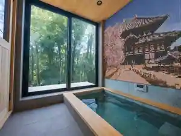
Horyuji Kuretake So Mizukemuri Hitomune Kashi Han Roten Onsen No Yado
Inn at Tokashihanroten Onsen in Horyuji, Ikaruga with open-air baths.
Dining
ラーメン家 みつ葉 the second
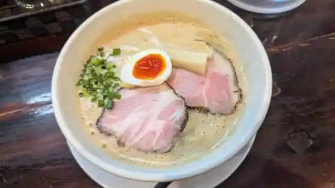
Ramen Ie Mitsu Ha the second
一平ちゃん
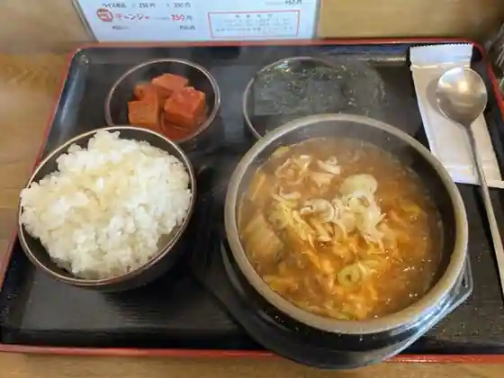
Ippei Chan
ラーメン家 煌
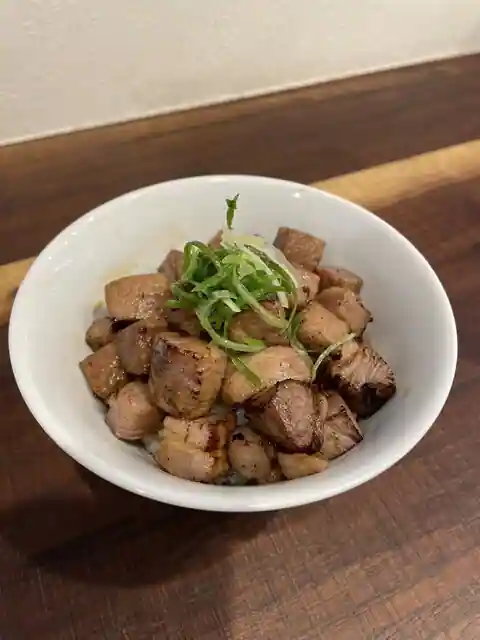
Ramen Ie Ko
布穀薗
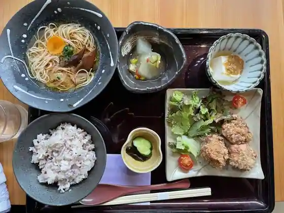
Nuno Koku Sono
若竹
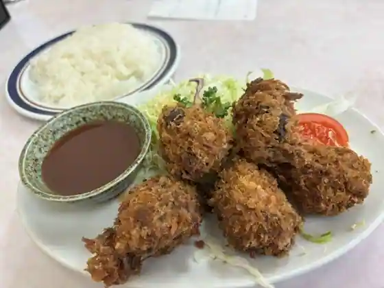
Wakatake
オリンピック飯店
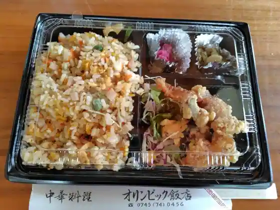
Orinpikku Meshi
旅木
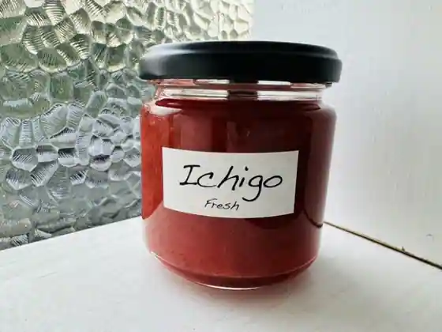
Tabi Ki
Cafeこもど
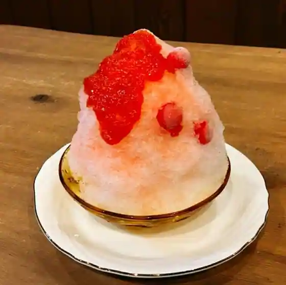
Cafe Komodo
手打ち蕎麦 たぬき
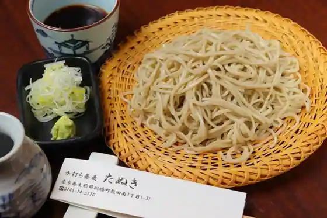
Teuchi Chi Soba Tanuki
リラクゼーションカフェシャンドゥルール
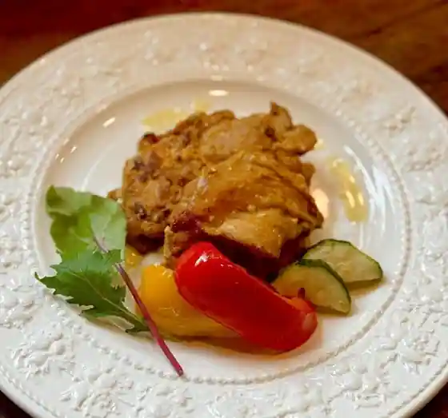
Rirakuzeshon Cafe Shandoururu
奈良祥樂 法隆寺本店
Nara Sho Raku Horyuji Hon
中国料理 紫微星 奈良店
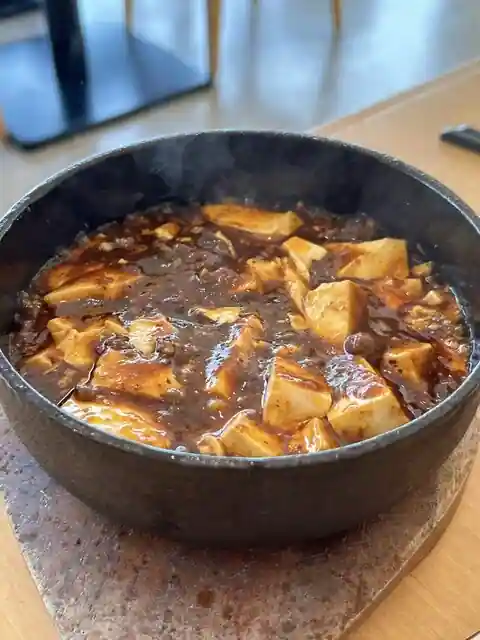
Chugokuryori Shibi Hoshi Nara
玄米庵
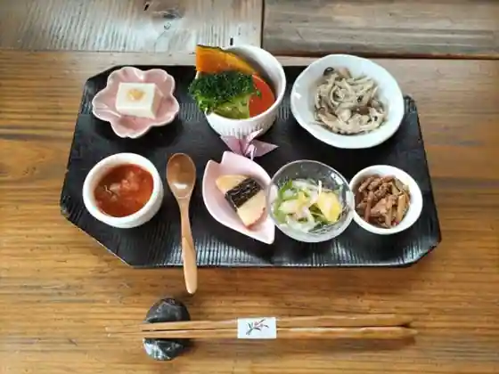
Genmai Iori
山久 法隆寺店
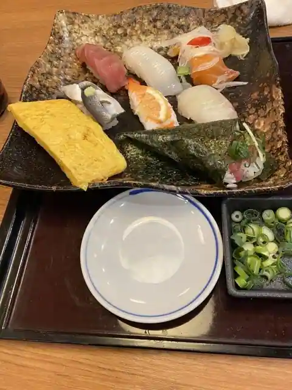
Yama Kyu Horyuji
越後 斑鳩店
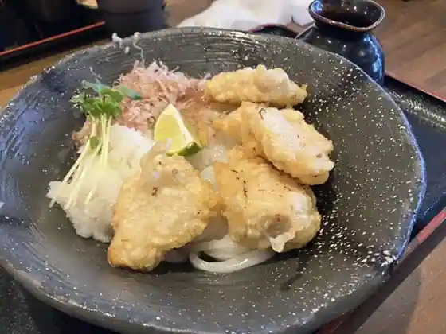
Echigo Ikaruga
釜めし 弁慶
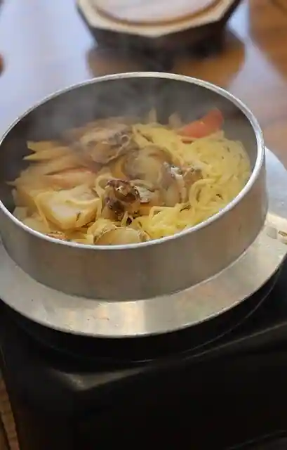
Kama Meshi Benkei
手打ち蕎麦 喜作
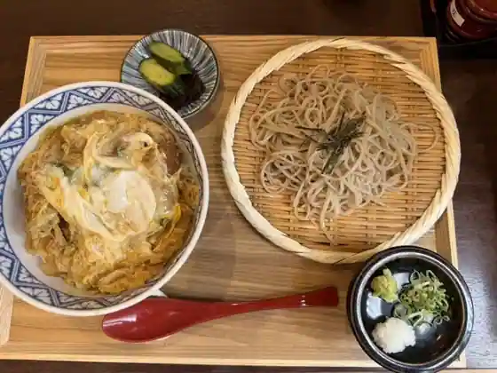
Teuchi Chi Soba Kisaku
松本屋
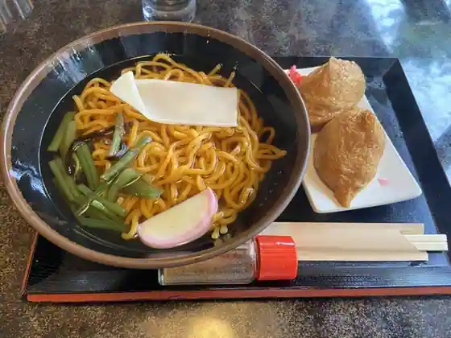
Matsumoto Ya
志むら
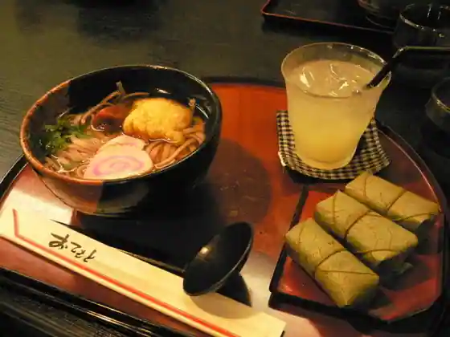
Kokorozashi Mura
3F上ル
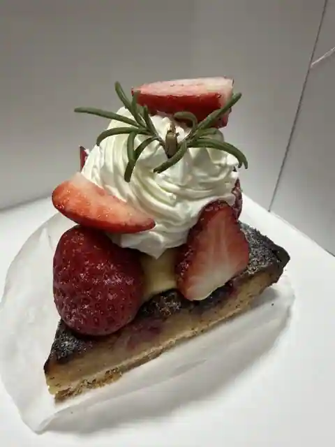
3F Ue Ru
サクッとカフェ
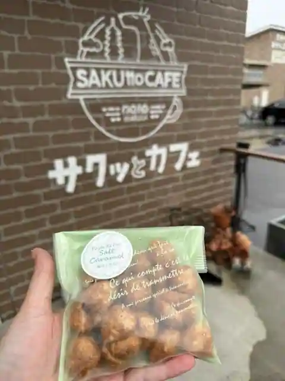
Sakutsu To Cafe
松鼓堂 堀本
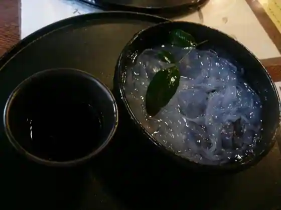
Matsu Tsuzumi Do Horimoto
ＰＵＪＡ 法隆寺店
PUJA Horyuji
Sights
Mimuro Yama
Chugu Tera
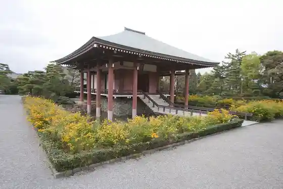
Yoshida Tera
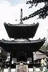
Ikaruga Bunkazai Katsuyo Center

Hoki Tera
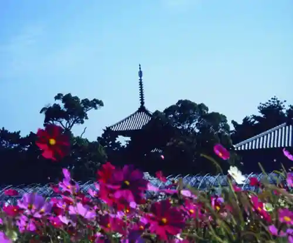
Horin Tera (Ikaruga)
Horyuji
Tatsuta Kawa
Fuji no Ki Burial Mound
Tatsuta Shrine